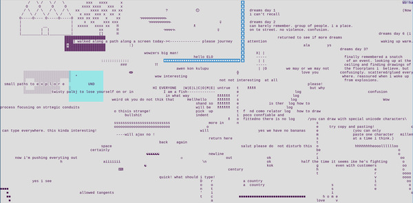
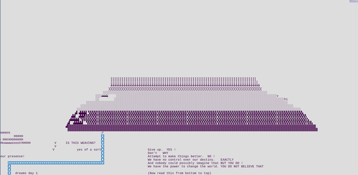
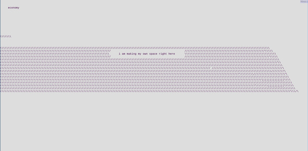

Lee Tusman
↩ Everyday
<
>
Title: Savage Words
Year: 2020
Medium: Website
URL: savagewords↩
PDF: UCF Stars Digital Collections
Description:
Savage Words was an ongoing online event during the Electronic Literature Organization 2020 Conference. It served as a realtime massive multiplayer online text space as well as a collaborative poem and asynchronous chatroom. It was a corner of the internet built on the platform Your World of Text, an infinite grid editable by visitors. Participants joined in a communal space, a textual table of simultaneous and asynchronous shared writing. ASCII images, informal conversations, 'Poetry', and other forms of experimental text are woven together into a freewheeling shared work. Savage Words serves simultaneously as a place of experimentation, documentation, poesis, and communal conversation.



 ©opyleft
©opyleft